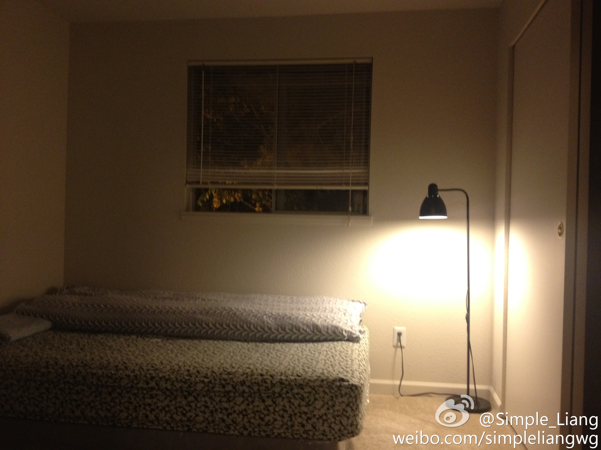
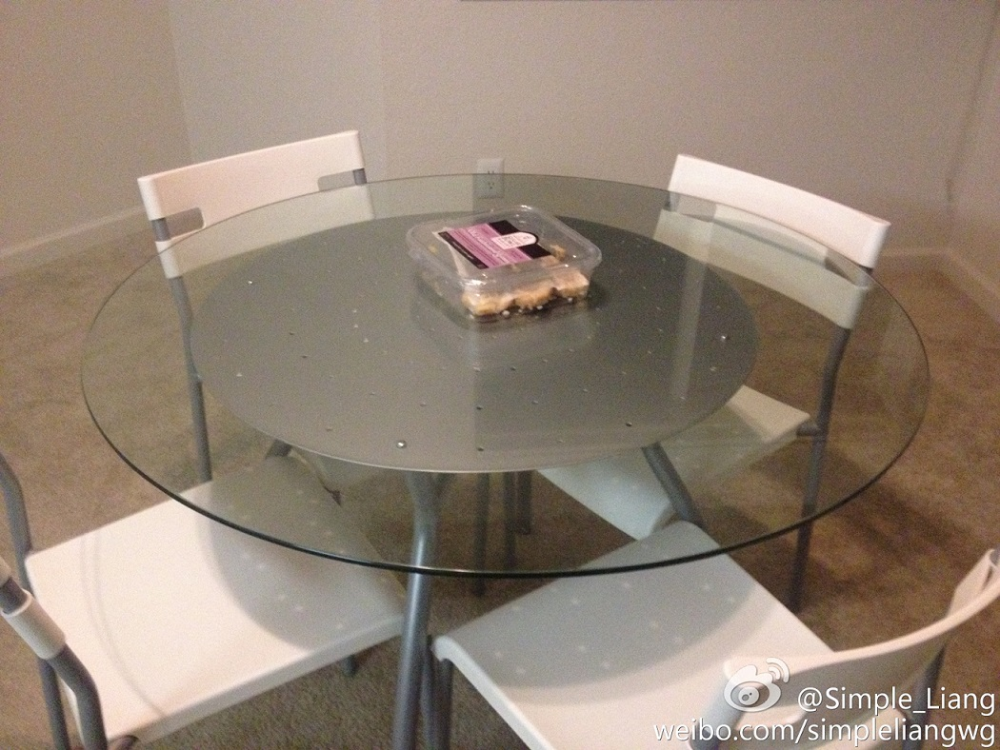
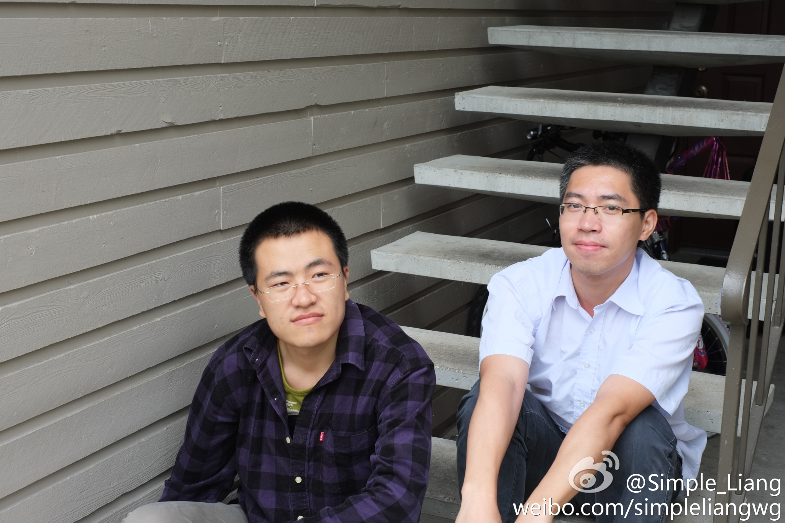
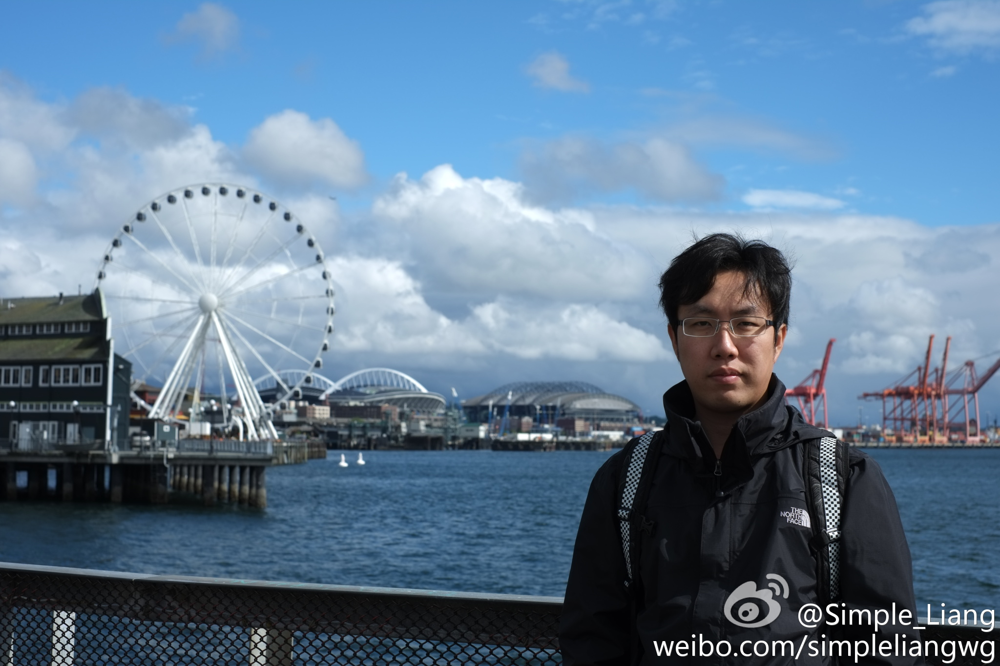
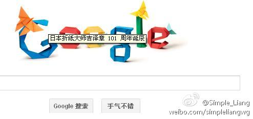
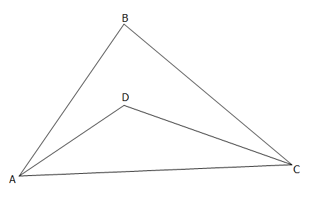

微言
Simple_Liang, 2012-2-7 22:25, 2016-06-25 23:30
Simple_Liang, 2016-06-30 4:35
My Blog is moved to https://simpleliangsl.github.io
Simple_Liang, 2016-03-20 14:23
嗯，我这辈子大概不会有什么出息了。
Simple_Liang, 2016-03-08 18:27
每次相亲不合意，就如释负重，松一口气。岁月慢慢变压力，我的经验值为零，我没有能力，我不够自信。我怕真要遇上喜欢的女孩，不知所措，不敢靠近。我响起一首歌，“故事平淡但当中有你，已经...”，哦，应该是“不喜欢孤独，却又害怕两个人相处，这分明是一种痛苦，哎呀好痛苦啊”。还可以写4个字，完
Simple_Liang, 2016-03-05 02:39
小小计算机 2016-03-03 Little Little Computer.doc
Simple_Liang, 2015-9-25 03:55
@ClaireYang_ "简语 2015-09-25.zip"，节日快乐 :D 简语 2015-09-25.zip
Simple_Liang, 2015-9-14 13:09
Thank God! The data is back. I am old again. The Old Man and the Data, LOL. Backing up...
Simple_Liang, 2015-9-13 16:56
5年半的工作积累，随着上周突如其来的数据清洗，不留痕迹。我就如同变回一个新人，一片空白，茫然，陌生，尴尬。那些无比重要的数据一去不返，任何回忆的追踪都是徒然。我该如何重新开始，我是否还有能力造一个新的自己？哦，昨天的Team Building...
Simple_Liang, 2015-8-23 01:53
@ClaireYang_， "简语 2015-08-23.zip" 基本完成（解压密码为你名拼音%2B你儿名拼音）我会持续改进，直到九月二十五。谨此献给敬爱的您，祝愿您家的想想健康快乐，聪明伶俐。我发现HelloWorld是个不错的电影题材，由简入深，几经磨练，返朴归真 简语 2015-08-23.zip
Simple_Liang, 2015-6-30 00:53
Life is short. I need Python
Simple_Liang, 2015-3-8 23:03
前两天，一同事买新手机，赠送了一本《次第花开》。我无意翻了一下，该书文笔流畅自然，“无常”和“无我”触动了我。“事物之所以无我，是因为它随缘生灭，缘起则生，缘灭则灭，这便是因果”，“因果一旦成熟，任何行动都无法阻止果报的显现。如果痛苦、尴尬在所难免，我们最好让自己有所准备”。“解脱是从认识痛苦开始的”。我最近迷茫疲惫，是留下还是回家？此刻碰上这本书，算是缘分吧。坦白说，我没有宗教信仰，佛教也好，基督教也好，我“理性”看待为一种观点，学习它，检验它，看看有哪些东西可以为我所用。“无常”使我顿然放下了些许，看来是个好东西。我愚钝，终一生怕未能开悟。上天保佑，让我随缘看到路上的各种提示“此路不通”，“到这边来吧”，“前面右拐，有你想要的东西“，"宇宙及人生的终极意义是...42",“柴静-穹顶之下 看了吗？”
Simple_Liang, 2014-10-1 00:15
I believe someday our paths will cross again. 哪天我会贴在邮件上. "You raise me up, to more than I can be." 爱因斯坦说“说再见别说永远，再见不会是永远”。梵高说”手牵手一步两步三步四步望着天“。
Simple_Liang, 2014-9-1 00:01
今天John, Lily和我去Bruce家聚会。看了刘三姐，中国好声音，有说有笑，倍感温馨。通过逆向工程他家的纸花，我也折了一朵，多想亲手送给她。几个月前她就坐在我现在的位置，可这次我和他哥没有提起。我不够自信，没等结果，便不再联系。我的情商足够低，越想靠近，越是逃避。一句问候，其实比学一首歌容易，“莫名我就喜欢你...“也许她早已把我忘记。我想，如果她是上天给我的最后机会，我该怎么办。“难道我就这样过我的一生...”Stop it. 脑中的声音片刻不能消停。我恐怕要对不起Family，不过至少我还喜欢女孩子嘛。想想能活在世上，已足够幸运。新学期，新开始，主动积极，一次解决一个问题。
Simple_Liang, 2014-7-13 09:54
故意把恐怖片介绍成超级搞笑片，于是还真有人看到了笑点，当然有人会大骂“谁他X的说这是搞笑片的”，还有人丧心病狂顿悟“重要的不是看什么电影，而是有什么态度”。《黑择明》说“死亡迟早都找你，切勿凭自己”，就是教人别作死。
Simple_Liang, 2014-6-7 22:36
My story is getting short. I wanna have my own Lisp, AI, Math and the nature of universe before becoming normal. I am just an ordinary man, and I trust God is always with me. BTW, I miss Google(203.208.46.146)
Simple_Liang, 2014-5-18 16:53
《同桌的你》连预告片都作的要死，《归来》则处处感人真挚。哭两次，快跑焉识、谈钢琴。世界如此真实，同样的雨触手可及，我曾厌恶雨季。世界在变异，比如陈奕迅神经病，生活大爆炸消失，圈钱烂电影进击，没房没伴侣，没生活意义。没关系，抱怨最后一次。爸妈还安好，做个早睡早起的好孩子，没梦也练习一万次
Simple_Liang, 2014-3-14 21:44
3.14，圆周率日，爱因斯坦诞辰135年
Simple_Liang, 2013-12-24 23:38
愿不过圣诞的人得到上帝的保佑
Simple_Liang, 2013-9-28 11:48
凌晨两点，雨天，悠然见风吹发肩，日照西佛莲，蜕变蝴蝶茧，基因突变，死亡空间，痛苦蔓延，屠龙剑，换酒钱，告祖先中原沦陷，豆沙馅，烧饼甜，哆啦A梦大冒险，云吞面，一袋盐，名侦探柯南杀人事件...闭眼，身边，睁眼，不见，数质数直到哥德巴赫出现，证实这几夜失眠。
Simple_Liang, 2012-12-9 17:24
Simple:"Anna, you are amazing!" Anna:"Please call me 1000001 1101110 1101110 1100001. Human language is killing me." Simple:"With all due respect, machine language drives me crazy. Even object-oriented language is better than that. Of course human language is the best."
Simple_Liang, 2012-7-16 16:22
Good night, Goodbye on 07/16/2012

Simple_Liang, 2012-7-16 16:17
Table for 3: James, Ray and Simple

Simple_Liang, 2012-7-12 14:14
Men without key at the first day 06/16/2012

Simple_Liang, 2012-7-12 13:23
在美国之旅即将结束之际，有画要说，感谢身边一切的人，尤其是James不辞劳苦当我们的厨师，导游，司机，英语老师，摄影师...还有形象顾问，可谓十八般武艺。没有他旅程不会如此顺畅。以下图片由James独家赞助

Simple_Liang, 2012-3-14 23:02
3.14，圆周率日，也是伟人爱因斯坦的诞辰，就这样被Google忽略了么？

Simple_Liang, 2012-2-26 23:55
没有绝对的对错，只是不同的选择。你选择香蕉，他选择苹果。生活方式属于个人选择，可以分享，不可强夺。孟德斯鸠说“我不同意你说的每一句话,但我誓死捍卫你说话的权利”。
Simple_Liang, 2012-2-7 22:25
证明：AB + BC > AD + DC.
